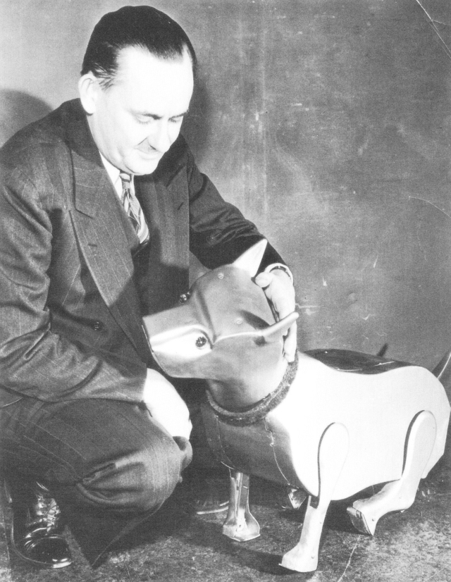
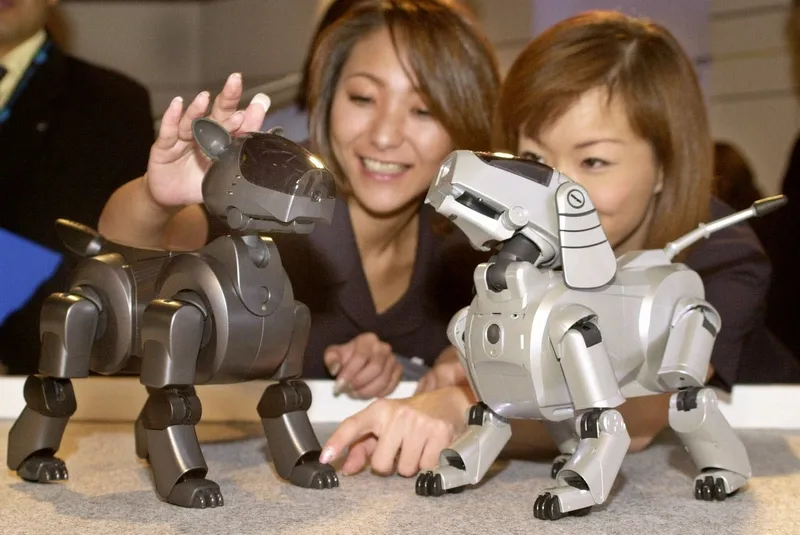
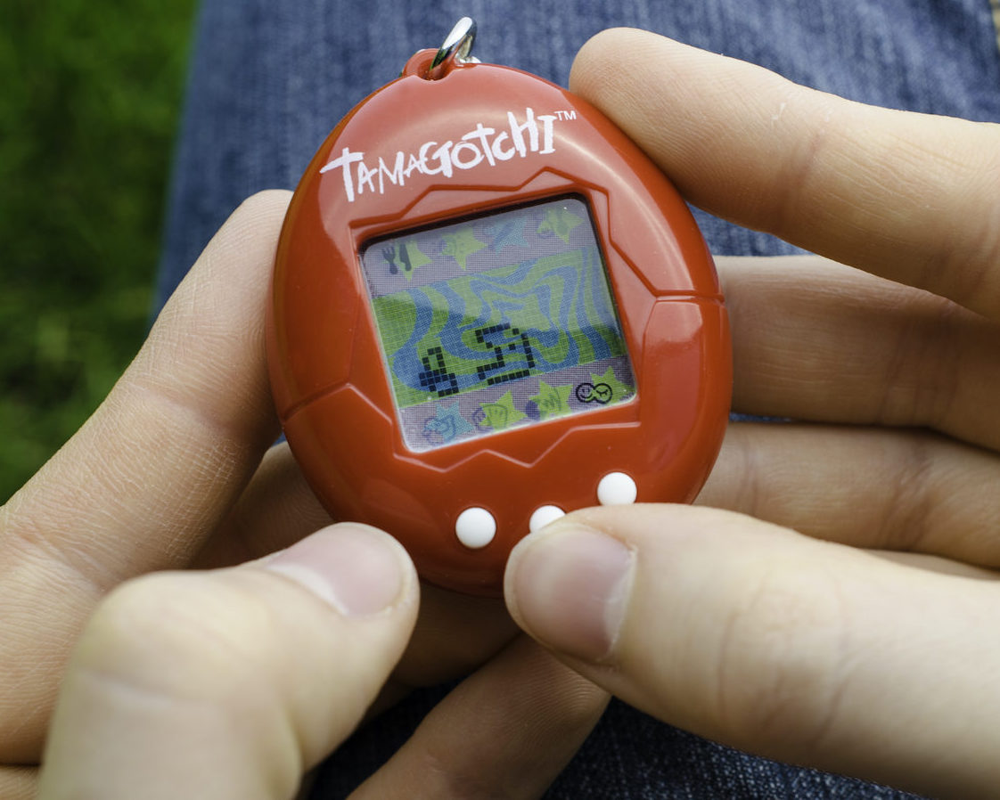
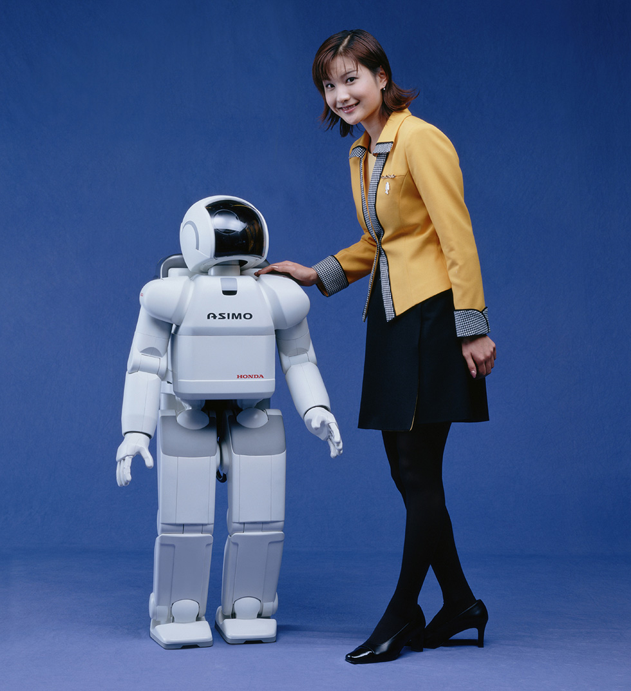
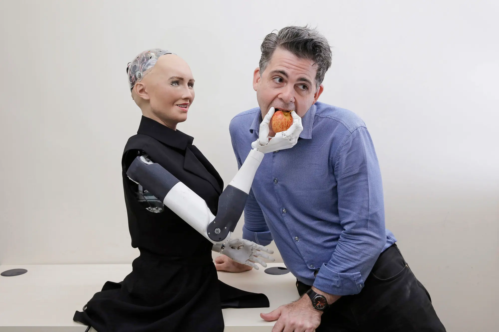

Humans seek connection with others, forming relationships that provide emotional support, understanding, and a sense of belonging. As technological advancements have progressed, we have extended this desire for companionship to the realm of artificial intelligence and robotics.

This fascination has manifested in various forms, from the invention of mechanical toys to the development of sophisticated humanoid robots.

The quest for creating robot companions with the ability to mimic human appearance and behaviour has led to the creation of highly sophisticated humanoid robots with the ability to communicate, learn, and even display emotions.

Robots designed with AI that can simulate emotions could provide emotional support, creating a perception of companionship and empathy, potentially improving mental well-being.

Though what does this say about us as humans if AI lacks the subjective experiences and self-awareness? As these are fundamental aspects of genuine human companionship.
